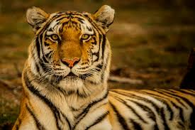

.jpg)
.jpg)
Phylogenetic relationship of tiger populations based on Driscoll et al. (2009) Following Linnaeus's first descriptions of the species, several tiger specimens were described and proposed as subspecies. The validity of several tiger subspecies was questioned in 1999. Most putative subspecies described in the 19th and 20th centuries were distinguished on basis of fur length and colouration, striping patterns and body size, hence characteristics that vary widely within populations. Morphologically, tigers from different regions vary little, and gene flow between populations in those regions is considered to have been possible during the Pleistocene. Therefore, it was proposed to recognize only two tiger subspecies as valid, namely P. t. tigris in mainland Asia, and P. t. sondaica in the Greater Sunda Islands. Results of craniological analysis of 111 tiger skulls from Southeast Asian range countries indicate that Sumatran tiger skulls differ from Indochinese and Javan tiger skulls, whereas Bali tiger skulls are similar in size to Javan tiger skulls. The authors proposed to classify Sumatran and Javan tiger as distinct species, P. sumatrae and P. sondaica with Bali tiger as subspecies P. sondaica balica. In 2015, morphological, ecological and molecular traits of all putative tiger subspecies were analysed in a combined approach. Results support distinction of the two evolutionary groups continental and Sunda tigers. The authors proposed recognition of only two subspecies, namely P. t. tigris comprising the Bengal, Malayan, Indochinese, South Chinese, Siberian and Caspian tiger populations, and P. t. sondaica comprising the Javan, Bali and Sumatran tiger populations. The authors also noted that this reclassification will affect tiger conservation management. The nominate subspecies P. t. tigris constitutes two clades: a northern clade composed of the Siberian and Caspian tiger populations a southern clade composed of all other mainland populations. One conservation specialist welcomed this proposal as it would make captive breeding programmes and future rewilding of zoo-born tigers easier. One geneticist was sceptical of this study and maintained that the currently recognised nine subspecies can be distinguished genetically. In 2017, the Cat Classification Task Force of the IUCN Cat Specialist Group revised felid taxonomy and recognized the tiger populations in continental Asia as P. t. tigris, and those in the Sunda Islands as P. t. sondaica.The following tables are based on the classification of the species Panthera tigris provided in Mammal Species of the World. It also reflects the classification used by the Cat Classification Task Force in 2017:
Linnaeus's scientific description of the tiger was based on descriptions by earlier naturalists such as Conrad Gessner and Ulisse Aldrovandi. Bengal tiger skins in the collection of the Natural History Museum, London vary from light yellow to reddish yellow with black stripes.
Illiger's description was not based on a particular specimen, but he only assumed that tigers in the Caspian area differ from those elsewhere. It was later described as having narrow and closely set stripes. The size of its skull did not differ significantly from that of the Bengal tiger. According to genetic analysis, it was closely related to the Siberian tiger. It had been recorded in the wild until the early 1970s and is considered extinct since the late 20th century.
Temminck's description was based on an unspecified number of tiger skins with long hairs and dense coats that were traded between Korea and Japan. He assumed they originated in the Altai Mountains. The Siberian tiger was later described as having pale coats with few dark brown stripes.
Hilzheimer's description was based on five tiger skulls purchased in Hankou, southern China. These skulls differed in the size of teeth and jaw bones by a few cm from skulls of tigers from India. Skins of tigers from southern China in the fur trade were said to be vivid orange in colour with rhombus-like stripes. Because of differences in the shape of skulls, it was long thought to constitute the most ancient variety. It was noted to have a unique mtDNA haplotype Indochinese tiger
Mazák's description was based on 25 specimens in museum collections that were smaller than tigers from India and had smaller skulls. Malayan tiger
It was proposed as a distinct subspecies on the basis of mtDNA and micro-satellite sequences that differ from the Indochinese tiger. In pelage colour or skull size, it does not differ significantly from Indochinese tigers. There is no clear geographical barrier between tiger populations in northern Malaysia and southern Thailand.
Temminck based his description on an unspecified number of tiger skins with short and smooth hair.Tigers from Java were small compared to tigers of the Asian mainland
Schwarz based his description on a skin and a skull of an adult female tiger from Bali. He argued that its fur colour is brighter and its skull smaller than of tigers from Java. A typical feature of Bali tiger skulls is the narrow occipital plane, which is analogous with the shape of skulls of Javan tigers.
Pocock described a dark skin of a tiger from Sumatra as type specimen that had numerous and densely-set broad stripes. Its skull was a little larger than the skull of a tiger from Bali. It is the smallest of all living tigers. The reasons for its small size compared to mainland tigers are unclear, but probably the result of competition for limited and small prey. The population is thought to be of Asia mainland origin and to have been isolated about 6,000 to 12,000 years ago after a rise in sea-level created Sumatra
Restoration of a Panthera zdanskyi skull, an extinct tiger relative whose fossil remains were found in northwest China The tiger's closest living relatives were previously thought to be the Panthera species lion, leopard and jaguar. Results of genetic analysis indicate that about 2.88 million years ago, the tiger and the snow leopard lineages diverged from the other Panthera species, and that both may be more closely related to each other than to the lion, leopard and jaguar. The geographic origin of the Panthera is most likely northern Central Asia. The tiger–snow leopard lineage dispersed in Southeast Asia during the Miocene. Panthera zdanskyi is considered to be a sister taxon of the modern tiger. It lived at the beginning of the Pleistocene about two million years ago, its fossil remains were excavated in Gansu province of northwestern China. It is considered to have been more "primitive", but functionally and ecologically similar to the modern tiger. Northwestern China is thought to be the origin of the tiger lineage. Tigers grew in size, possibly in response to adaptive radiations of prey species like deer and bovids, which may have occurred in Southeast Asia during the Early Pleistocene. Panthera tigris trinilensis lived about 1.2 million years ago and is known from fossils excavated near Trinil in Java.The Wanhsien, Ngandong, Trinil and Japanese tigers became extinct in prehistoric times. Tigers reached India and northern Asia in the late Pleistocene, reaching eastern Beringia, Japan, and Sakhalin. Some fossil skulls are morphologically distinct from lion skulls, which could indicate tiger presence in Alaska during the last glacial period, about 100,000 years ago. In the Philippine island of Palawan, two articulated phalanx bones were found amidst an assemblage of other animal bones and stone tools in Ille Cave near the village of New Ibajay. They were smaller than mainland tiger fossils, possibly due to insular dwarfism. Otherwise, it would appear that early humans had accumulated the bones,so it may be that the tiger parts were imported from elsewhere, or that the tiger colonised Palawan from Borneo before the Holocene, considering the proximity of the two islands.Fossil remains of tigers were also excavated in Sri Lanka, China, Japan and Sarawak (Malaysia) dating to the late Pliocene, Pleistocene and Early Holocene.The Bornean tiger was apparently present in Borneo between the Late Pleistocene and the Holocene, but whether it went extinct in prehistoric or recent times has not been resolved. The potential tiger range during the Late Pleistocene and Holocene was predicted applying ecological niche modelling based on more than 500 tiger locality records combined with bioclimatic data. The resulting model shows a contiguous tiger range from southern India to Siberia at the Last Glacial Maximum, indicating an unobstructed gene flow between tiger populations in mainland Asia throughout the Late Pleistocene and Holocene. The tiger populations on the Sunda Islands and mainland Asia were possibly separated during interglacial periods. Results of a phylogeographic study indicate that all living tigers had a common ancestor 72,000–108,000 years ago. The tiger's full genome sequence was published in 2013. It was found to have similar repeat composition to other cat genomes and an appreciably conserved synteny. Hybrids Further information: Felid hybrid, Panthera hybrid, Liger, and Tigon Captive tigers were bred with lions to create hybrids called liger and tigon. They share physical and behavioural qualities of both parent species. Breeding hybrids is now discouraged due to the emphasis on conservation. The liger is a cross between a male lion and a tigress. Ligers are typically between 10 and 12 ft (3.0 and 3.7 m) in length, and weigh between 800 and 1,000 lb (360 and 450 kg) or more.Because the lion sire passes on a growth-promoting gene, but the corresponding growth-inhibiting gene from the female tiger is absent, ligers grow far larger than either parent species. The less common tigon is a cross between a lioness and a male tiger. Because the male tiger does not pass on a growth-promoting gene and the lioness passes on a growth inhibiting gene, tigons are around the same size as their parents.Some females are fertile and have occasionally given birth to litigons when mated to a male Asiatic lion.
There is a notable sexual dimorphism between males and females, with the latter being consistently smaller than males. The size difference between males and females is proportionally greater in the large tiger subspecies, with males weighing up to 1.7 times more than females. Males also have wider forepaw pads than females, enabling sex to be told from tracks.[57] It has been hypothesised that body size of different tiger populations may be correlated with climate and be explained by thermoregulation and Bergmann's rule, or by distribution and size of available prey species. Generally, males vary in total length from 250 to 390 cm (8.2 to 12.8 ft) and weigh between 90 and 306 kg (198 and 675 lb) with skull length ranging from 316 to 383 mm (12.4 to 15.1 in). Females vary in total length from 200 to 275 cm (6.56 to 9.02 ft), weigh 65 to 167 kg (143 to 368 lb) with skull length ranging from 268 to 318 mm (0.879 to 1.043 ft). In either sex, the tail represents about 0.6 to 1.1 m (24 to 43 in) of total length. The Bengal and Siberian tigers are amongst the tallest cats in shoulder height. They are also ranked among the biggest cats that have ever existed. The tigers of the Sunda islands are smaller and less heavy than tigers in mainland Asia, rarely exceeding 142 kg (313 lb) in weight.
White tigers in Haifa Zoo The white tiger lacks pheomelanin (which creates the orange colour), and has dark sepia-brown stripes and blue eyes. This altered pigmentation is caused by a mutant gene that is inherited as an autosomal recessive trait, which is determined by a white locus. It is not an albino, as the black pigments are scarcely affected.[59][60] The mutation changes a single amino acid in the transporter protein SLC45A2. Both parents need to have the allele for whiteness to have white cubs.[61] Between the early and mid 20th century, white tigers were recorded and shot in the Indian states of Odisha, Bihar, Assam and in the area of Rewa, Madhya Pradesh. The local maharaja started breeding tigers in the early 1950s and kept a white male tiger together with its normal-coloured daughter; they had white cubs.[62] To preserve this recessive trait, only a few white individuals were used in captive breeding, which led to a high degree of inbreeding. Inbreeding depression is the main reason for many health problems of captive white tigers, including strabismus, stillbirth, deformities and premature death.[63] Other physical defects include cleft palate and scoliosis.[64] The snow white tiger is a morph with extremely faint stripes and a pale reddish-brown ringed tail. The golden tiger has a pale golden pelage with a blond tone and reddish-brown stripes. Both snow white and golden tigers are homozygous for CORIN gene mutations. These morphs are rarely recorded in the wild.[60]
In the wild, tigers mostly feed on large and medium-sized mammals, particularly ungulates weighing 60–250 kg (130–550 lb). Range-wide, sambar deer, Manchurian wapiti, barasingha and wild boar are significantly preferred. Tigers are capable of taking down larger prey like adult gaur but will also opportunistically eat much smaller prey, such as monkeys, peafowl and other ground-based birds, hares, porcupines, and fish.[88][52] They also prey on other predators, including dogs, leopards, pythons, bears, and crocodiles.Tigers generally do not prey on fully grown adult Asian elephants and Indian rhinoceros but incidents have been reported. More often, it is the more vulnerable small calves that are taken. When in close proximity to humans, tigers will also sometimes prey on such domestic livestock as cattle, horses, and donkeys.[89] Although almost exclusively carnivorous, tigers will occasionally eat vegetation for dietary fibre such as fruit of the slow match tree. Dentition of tiger above, and of Asian black bear below. The large canines are used for killing, and the carnassials for tearing flesh. Tigers are thought to be mainly nocturnal predators,[68] but in areas where humans are absent, remote-controlled, hidden camera traps recorded them hunting in daylight.[94] They generally hunt alone and ambush their prey as most other cats do, overpowering them from any angle, using their body size and strength to knock the prey off balance. Successful hunts usually require the tiger to almost simultaneously leap onto its quarry, knock it over, and grab the throat or nape with its teeth.Despite their large size, tigers can reach speeds of about 49–65 km/h (30–40 mph) but only in short bursts; consequently, tigers must be close to their prey before they break cover. If the prey catches wind of the tiger's presence before this, the tiger usually abandons the hunt rather than chase prey or battle it head-on. Horizontal leaps of up to 10 m (33 ft) have been reported, although leaps of around half this distance are more typical. One in 2 to 20 hunts, including stalking near potential prey, ends in a successful kill. Bengal tiger attacking a sambar in Ranthambore Tiger Reserve When hunting larger animals, tigers prefer to bite the throat and use their powerful forelimbs to hold onto the prey, often simultaneously wrestling it to the ground. The tiger remains latched onto the neck until its target dies of strangulation. By this method, gaurs and water buffaloes weighing over a ton have been killed by tigers weighing about a sixth as much. Although they can kill healthy adults, tigers often select the calves or infirm of very large species.Healthy adult prey of this type can be dangerous to tackle, as long, strong horns, legs and tusks are all potentially fatal to the tiger. No other extant land predator routinely takes on prey this large on its own. With smaller prey, such as monkeys and hares, the tiger bites the nape, often breaking the spinal cord, piercing the windpipe, or severing the jugular vein or common carotid artery. Though rarely observed, some tigers have been recorded to kill prey by swiping with their paws, which are powerful enough to smash the skulls of domestic cattle, and break the backs of sloth bears. After killing their prey, tigers sometimes drag it to conceal it in vegetative cover, usually pulling it by grasping with their mouths at the site of the killing bite. This, too, can require great physical strength. In one case, after it had killed an adult gaur, a tiger was observed to drag the massive carcass over a distance of 12 m (39 ft). When 13 men simultaneously tried to drag the same carcass later, they were unable to move it. An adult tiger can go for up to two weeks without eating, then gorge on 34 kg (75 lb) of flesh at one time. In captivity, adult tigers are fed 3 to 6 kg (6.6 to 13.2 lb) of meat a day.
backto top..>